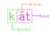
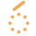
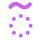
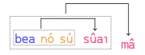
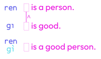
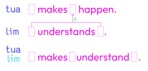

| a | e | ı | o | u | y |
| /a/ | /ɛ/ | /i/ | /o/ | /u/ | /ʏ/ |
| b | c | ch | d | f | g |
| /b/ | /t͡sʰ/ | /t͡ʃʰ/ | /d/ | /f/ | /g/ |
| h | j | k | l | m | n |
| /h/ | /d͡ʒ/ | /k/ | /l/ | /m/ | /n/ |
| p | r | s | sh | t | v |
| /p/ | /ɾ/ | /s/ | /ʃ/ | /t/ | /v/ |
| z | zh | (‘) |
|
|
|
| /z/ | /ʒ/ | /ʔ/ |
|
|
|
A unit is made up of an initial, a final, and a tone. It's conceptually similar to a syllable. Every consonant can be an initial. 
These are the 105 finals:
| a | ea | ıa | oa | eaı | ıaı | oaı | uaı | aN | eaN | ıaN | uaN | oaN | r | |||
| e | ıe | oe | ue | eau | ıau | oau | uau | eN | ıeN | ueN | oeN | |||||
| ı | aı | eı | oı | uı | eoı | ıoı | uoı | yoı | ıN | uıN | ir | |||||
| o | au | eu | ıo | uo | ıeı | oeı | ueı | yeı | oN | euN | ıoN | uoN | ||||
| u | ıu | ou | ıyı | uN | ıuN | |||||||||||
| y | ıy | ıou | uou | yN | ıyN |
where N is any of n, m, t or k.
There are six tones:
| Falling | |
|  | Rising |
|  | Creaky |
| Glottal | |
| Flat | |
| Rise-Fall |
There are 5 classes of words:
Verbs are predicates and their arity can range between 0 and 3. They come at the start of a clause and absorb all of the arguments after it until the argument count reaches its arity number.
Verbs are defined in this fashion:
To derive an argument out of a verb, use the tone. Its meaning will be what satifsies its first argument slot.
su: to be water
sú: some water (one that is water)
And so, here is a simple sentence:
Su sú: Some water is water.
To make the sentence a bit more interesting, here are some pronouns:
As an argument, they always take the tone as pronouns.
Su ó: It's water.
Bea kéoı sú: They're drinking some water.
The words r and zhr switch the first slot with the second or third slots respectively.
chr: ▯ eats ▯.
chr r: ▯ is eaten by ▯.
The word cr switches the 2nd and 3rd slots, and ir is the default omitted switcher that does nothing.
The switchers iy, ry and zhy mean the inherent ability to satisfy the 1st, 2nd and 3rd slots respectively.
chr ry: ▯ is potentially able to be eaten by ▯; ▯ is food to ▯.
Switchers take the tone if they scope over the verb phrase and the tone if they scope over the immediate preceding verb only.
ĩr, r̃, zhr̃ come before a whole argument phrase and indicate that it fills the 1st, 2nd and 3rd slots respectively.
chr ká ĩr nó r̃ = chr nó ká
Determiners are a class of particles that absorb a following argument and modify it. They normally take the tone.
Bea nó dit sú.: I'm not drinking any water.
Chr chí ne ká?: What are you eating?
If a determiner takes the , it acts as a noun by itself and is assumed that it absorbed the argument ká (thing).
Bea nó dít.: I'm not drinking anything.
The tone on a verb indicates an adverbial clause. An adjectivial clause can go anywhere in a sentence. The first argument place of a verb is filled with the event of the sentence. If the verb is unary, this causes it to act like an adverb.
Bea nó sú sûaı: I'm drinking water fast.
If the verb has more than one slot, it'll behave like a preposition.
Bea nó sú dê víyı: I'm drinking water at a house.
can also be used on a determiner to indicate the context.
lô víyı: As for the house, ...
nô...: As for me,
To use the object of the context clause in the sentence, hóa is used.
Lô víyı seu nó hóa.: As for the house, I like it.
While it is true that the adverbials can go pretty much anywhere, the order of scope if multiple adverbials exist is decided by which one comes last.
Content clauses put the tone on the head verb.
bëa nó sú: an event of me drinking water
sú: a property of drinking water
The former is an event, and the latter is a property clause. The word já distinguishes it as a property clause and it indicates a "slot" for the property to be satisfied.
bëa já sú: to drink water
bëa sú já: to be drank by water
A clause can include an adverbial anywhere except at the end of it.
A clause can also be started with a complementizer. In that case, the clause tone carries over to the complementizer. The default complementizers omitted in examples above are ë for event clauses and ä for property clauses.
ë bea nó sú: an event of me drinking water
ä bea já sú: a property of drinking water
on the content complementizers can be used to avoid opening a whole clause and directly fill all slots of a verb with sá or já depending on the clause type.
a bea: to drink
e bea: event of drinking
Seu nó a chr.: I like to eat.
They can also be used on nouns just like a determiner to mean "property/event of something related to X."
a sú: to do something related to water
To be even vaguer, they can take the tone to be a noun filled with a vague verb.
á: to do something
Restrictive relative clauses are formed by using on the head verb and putting it after the noun. Its omitted complementizer is kẽ.
móu rẽt: a paper which is red
rén sẽu a kıy: a person who likes to write
The object that the clause is attached to fills the first slot of the verb automatically. The head noun syntactically acts as if its arity is one less than its definition.
If this is not wanted, the pronoun hóu can be used to explicitly place the object in the clause. This pronoun also causes the clause to terminate with the verb's normal arity. If relative clauses are nested, the deeper clause will be prioritized over which object the pronoun applies to and which gets to absorb it.
For incidental relative clauses, the complementizer jũ is used.
The tone on a determiner (sã míau) or a pronoun (nõ) indicates some type of association or ownership of the attached argument. These aren't exacly relative clauses but they syntactically behave the same.
míau nõ: my cat
chŕ ry bãn míau: cat food
Interjections are words that carry emotion (ıeı: yay!), a complete signal (esen: hello), and anything of that sorts.
Interjections with the tone are syntactically considered sentences by their own.
Ieı! Seu míau nó. : Yay! A cat likes me.
Interjections can be attached to a noun with the tone. They'll attach to the nearest argument.
Seu míau ìeı nó. : A cat (yay!) likes me.
Attached interjections do not interfere with constructs like relative clauses.
Míau ìeı sẽu nó. : A cat (yay!) who likes me.
Mâ seu chí èsun jũ chŕ ry nõ lo míau?: Do you (hello btw), who ate my food, like the cat?
The particle jır takes a verb phrase, a noun phrase or if it can't, a word, and turns it into an interjection. jır's tone pattern is the same as an interjection.
mí takes the next word and makes a noun in the form of "one who is named...". mı makes it a verb in the form of "to be named...". The rest of the tones follow the determiners.
mí Chèk: Flower
mí California: California
The name component's tone determines the type of name:
Similarly, zhoan quotes the next word. Its tone pattern is the same as mı.
zhóan no: the word "no"
The words lıok and lıuk quote the text inside it. The tones of lıok follows the pattern of mı, but the tones of lıuk determines the type of quote.
lıok ... lĩuk will be explained later in the Letters & symbols section.
Foreign quotes need a pause after lıok and before lïuk.
...sıak seoı nó líok "Ieı sú!" líuk.: ...and then I said "Yay! Water!".
ma is a verb defined as "Is ▯ the case?"
You can put mâ anywhere in a sentence to make a yes or no question.
Mâ ham chí?: Are you well?
The determiner ne was mentioned in the Determiners section. The meaning of ne is "which ..." and the meaning of né is "what".
Bea chí né?: What did you drink?
Bea chí ne sú?: Which water did you drink?
Conjunctions are words like "and" or "or" that connect and group sentence elements.
With the tone, they connect the adjacent two elements. This is how conjunctions in most languages work, and is referred to as the infix form.
sú ve míau: a water and a cat
Chr ve bea kéoı sá.: They eat and drink stuff.
With the tone, they instead connect two elements that come after it. This is called the prefix form.
vé sú mían: water and cat
Vé chr bea kéoı sá.: They eat and drink stuff.
The tone makes it prefix, but it keeps absorbing elements until it hits the stopper particle zhoı. This is useful for connectors that require multiple inputs.
These conjunction are not special, and still work with and , but they're most common with .
The particle zhoaı takes a verb phrase or a property clause in front of it and forms a conjunction that chooses the element that satisfies it most. Zhoaı's tone pattern is exactly the same as a normal conjunction.
The tone makes conjunction take one noun in front of it, and causes it to apply to every individual that is referred in that noun.
zhõaı suaı tú: the fastest of them all
The word naı negates an element before it. The tone makes it scope over an entire element and makes it scope over a singular word or tense.
Chr naı nó sá. Ve bea naı nó sá.: I didn't eat anything. And I didnt drink anything.
Scalers are words that determine severity or focus. They belong to the same syntactic class as naı.
Chr nó shámu nea.: I ate something other than an apple.
Chr ıa nó shámu.: I indeed ate an apple.
suaı jan: very fast
The numbers one to nine can be appended with powers of ten.
roaı tem: 80
kı fuem: 200
These units can also be appended in descending powers of ten to build numbers in between.
kı fuem roaı tem kı: 282
kıom bı: 1001
The tones of units before the first word do not matter and doesn't alter anything.
kı fuem róaı tem kï: 282
The tone of the first word determines syntax stuff. causes the number to be a verb defined as "▯ is N in number".
causes it to be a noun referring to the number itself.
Seu nó sán: I like (the number) 3.
makes it quantify a noun.
ren sàn: 3 people
makes it an ordinal.
ren sãn: 3rd person
makes it act adverbially and specifies how many times it happens.
bak nó ó sân: I saw it 3 times.
| Tone | Pronoun | Determiner | Verb | Complementizer | Number | Interjection |
|---|---|---|---|---|---|---|
| sa míau | mıau | a mıau | san | ıeı | ||
| modify noun | verb | one-verb content clause | verb | normal interjection | ||
| nó | sá | míau | á | sán | ||
| noun | noun, filled with ká | noun | vague action context clause | number noun | ||
| nõ | sã míau | mĩau | jũ mıau | sãn | ||
| associated with | associated with | relative clause | relative clause start | ordinal, -th | ||
| sä mıau já | mïau | ä mıau já | ||||
| determiner clause | content clause | content clause start | ||||
| nò | sà míau | mìau | à mıau já | sàn | ìeı | |
| object incorporation | object incorporation | serial verb | content clause object incorporation | quantifier | attach to noun | |
| nô | sâ míau | mîau | â mıau já | sân | ||
| context | context | adverbial clause | content clause context | N times |
These are the 5 tenses. They are attached after a verb to specify when it happens.
Chr ba nó shámu.: I'll eat an apple.
The tone makes it attach to a noun.
Chr ca nó shámu pù.: I'm eating what used to be an apple.
They can be put next to each other to combine them.
Chr ba juı nó shámu pù ca.: I will eat in the distant future what used to be, and still is an apple.
lıok ... lĩuk is the quote format for letters and symbols.
The words used in this quote do not carry any meaning and are disconnected of the words used outside of it. They can be considered to have a completely different "word set" that happen to share shape with normal words. Tones inside do not matter at all.
Vowels are said identical. (a, e, i, o, u).
Consonants have an added "e" after them. (be, ce, de, fe...)
Numerals 1-9 as the same as number words. (bı, kı...). 0 is dıt.
tau capitalizes the next letter. gea capitalizes every letter next to it until another gea appears.
tom...tıom is a parenthetical clause, and can go anywhere in a sentence.
da is a mostly optional sentence terminator.
Here is a dictionary entry of a verb:
The "c" indicates that the slot takes an thing. Only stuff like "cat" or "dog" or "thing" can satisfy this spot. It is the slot's signature.
The types of signature are:
A verb can never have multiple arities, but it can have multiple definitions depending on the signatures of its slots.
If a verb receives arguments that no definition matches, the sentence is invalid.
sä mıau já: one who is a cat
A determiner can have the tone to start a clause where it extracts an object which would satisfy já. Its essentially a shorthand for [determiner] ká kẽ...
When you put a verb in the tone and attach it to another verb, they serialize and bond into a cohesive verb phrase. This causes their slots to interact in certain ways.
For two unary verbs, or one unary verb with a verb of arity >2, this causes their slots to get AND-ed.
For two verbs of arity >2, or the second one being unary, the second slot of the first word absorbs the first slot of the second verb.
Serial verbs can be lexicalized by appending them. The language's name, Zulyk, comes from zu lỳk "Zulykian Language".
án repeats the first slot's entity and át repeats the second slot's entity. They can be comparable to reflexive pronouns.
Bak chí án: You're looking at yourself.
Lım naı nó séoı r ãn.: I don't understand what I'm talking about.
Each word belongs to a syntactic class. Every word in a syntactic class can be swapped with another and still be the same syntactically. (Semantically is another question.)
Counting each tone variant of a base word different "words", there are exactly 104 of them. Unless you're analysing precise syntax, these classes are not very relevant and their names are completely irrelevant unless you're building a parser program.